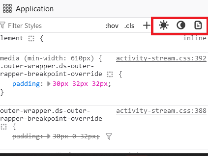
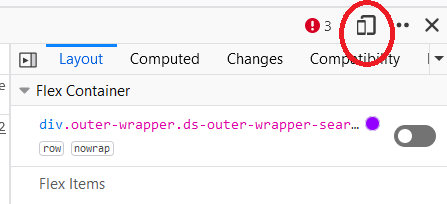

Pelican Lab
- Description
- Getting Started
- Lab Instructions
- Restrictions
- Recommendation
- Requirements
- Submission Instructions
- Collaboration
Description
The primary objective of this lab is for you to acquire the skills necessary to create a static page using Pelican, deploy it using GitHub pages, and learn to customize the basic themes by experimenting with CSS styling.
Getting Started
Clone the repository, change directory into the repo. Create a branch named src and initialize a python3 virtual environment.
git clone {git-repo-url}
cd {git-clone-url}
git checkout -b src
virtualenv venv --python=python3
source venv/bin/activate
Install Pelican, Markdown and ghp-import.
pip install pelican markdown ghp-import
Run the pelican quickstart. Make sure you answer Y when it asks you about Github Pages!
pelican-quickstart
Welcome to pelican-quickstart v4.0.1.
This script will help you create a new Pelican-based website.
Please answer the following questions so this script can generate the files
needed by Pelican.
> Where do you want to create your new web site? [.]
> What will be the title of this web site? My Cool Site
> Who will be the author of this web site? Danger Doggo
> What will be the default language of this web site? [en]
> Do you want to specify a URL prefix? e.g., https://example.com (Y/n) n
> Do you want to enable article pagination? (Y/n) Y
> How many articles per page do you want? [10]
> What is your time zone? [Europe/Paris] America/Edmonton
> Do you want to generate a tasks.py/Makefile to automate generation and publishing? (Y/n) Y
> Do you want to upload your website using FTP? (y/N) N
> Do you want to upload your website using SSH? (y/N) N
> Do you want to upload your website using Dropbox? (y/N) N
> Do you want to upload your website using S3? (y/N) N
> Do you want to upload your website using Rackspace Cloud Files? (y/N) N
> Do you want to upload your website using GitHub Pages? (y/N) Y
> Is this your personal page (username.github.io)? (y/N) N
Done. Your new project is available at /path/to/your/project
Lab Instructions
Phase One: Simple Pelican Site
Create your first Article
Create a file inside the content folder with some content. For example, you can use content/my-first-article.md with the following:
title: My First Article
date: 2019-01-07 8:00
category: Blog
authors: Your Name or Github Username or Some Alias
----
I like free static web hosting.
Enable Custom Themes for your Site
Make a directory called templates. Within this directory, create a new theme directory containing a templates folder and a static folder.
# On Ubuntu and macOS:
mkdir -p templates/mytheme/static
mkdir -p templates/mytheme/templates
On Windows you need to create the same structure.
Within the templates/mytheme/templates directory, create a new file base.html. Within the templates/mytheme/static directory, create a new file style.css.
touch templates/mytheme/templates/base.html
touch templates/mytheme/static/style.css
Add the following content to the file templates/mytheme/templates/base.html.
{% extends "!simple/base.html" %}
{% block head %}
{{ super() }}
<link rel="stylesheet" type="text/css" href="{{ SITEURL }}/theme/style.css" />
{% endblock %}
Modify the content of the templates/mytheme/static/style.css file to your preference. A quick sample stylesheet can be found below.
html, body {
margin: 0;
border: 0;
font-size: 100%;
background-color: #000000;
color: #ffffff;
}
This is just to get you started, you will have to add a lot to style.css later!
Add your theme to your pelicanconf.py file.
THEME = 'templates/mytheme'
In publishconf.py, Comment out CATEGORY_FEED_ATOM.
Generate and preview your site
For Mac And Ubuntu:
make devserver should work if you have make installed and the virtual environment activated.
For Windows:
pelican content
pelican --listen
Your site should now be available at http://localhost:8000.
For Ubuntu on Windows (WSL):
Get your Ubuntu VM's IP address using the ip addr show dev eth0 command in Ubuntu. It will be something similar to 172.19.46.249.
Use make devserver-global in Ubuntu. Then you can point your browser at http://yourubuntuvmsipaddress:8000, for example http://172.19.46.249:8000.
Prepare your Pelican Site for Github Pages
Update publishconf.py and set SITEURL to your github given url.
SITEURL = 'https://uofa-cmput404.github.io/${repository-name}'
You need to disable Github's built-in static site generator, Jekyll.
Jekyll is a static site generator like Pelican, except that it's written in Ruby.
However, sometimes it can conflict with Pelican. In order to disable it, you need to have Pelican produce a file called .nojekyll.
You can do that by creating a page with Pelican in the content/pages folder (create it if it doesn't exist). You could call it something like content/pages/nojekyll.md.
title: Disables Jekyll
status: hidden
url: .nojekyll
save_as: .nojekyll
----
This file just disables Jekyll
Run make html (MacOS or Ubuntu) or pelican content -o output -s pelicanconf.py (Windows or if you don't have make).
Check the output directory: it should contain a file called .nojekyll.
Make sure to not commit the output directory to your github: add it to your .gitignore. ghp-import will commit it later as a separate branch.
Enable Github Pages on Github
Create a branch in your github repo called pages.
Enable Github Pages for your repo. It is in the repo settings under pages, then select "Deploy from a branch". Select your "pages" branch. For more information, see Github's Documentation.
Deploy from MacOS or Ubuntu
- Set your pages branch name in
Makefile: setGITHUB_PAGES_BRANCH=pagesso that ghp-import doesn't overwrite yourmainbranch. - Deploy using
make github. - If you get ghp-import error. Install ghp-import to your virtual environment using pip. (
pip install ghp-import)
Deploy from Windows or Without Make
Make sure to include the -b pages to specify your pages branch so that ghp-import doesn't overwrite your main branch.
pelican content -o output -s pelicanconf.py
ghp-import output -b pages
git push origin pages
Check your Github Pages site
Your Github Pages site should be at a URL like https://uofa-cmput404.github.io/GITHUB REPO NAME/ a couple of minutes after pushing.
For example: https://uofa-cmput404.github.io/w24-h01-labsignment-pelican-hazelybell/.
Phase Two: Add content to your site
Create 3 more articles for your site from 3 project Gutenberg books of your choosing. You can directly download the html file from the website.
The Project Gutenberg HTML files contain HTML for a full webpage.
Your Pelican articles should only include the necessary HTML format the contents of your books correctly.
For example, the Project Gutenberg pages contain the <head> element for a webpage, but Pelican will generate its own <head> element from its Jinja HTML templates. In Pelican, the <head> is used to provide metadata.
So, you should replace the <head> element in your Pelican articles with one that provides the metadata Pelican is looking for.
Make sure to remove all unnecessary HTML from the Project Gutenberg HTML.
You should also add the metadata for Pelican similar to how you did for your first article above. Also, be sure to cite where you got your book from: the Project Gutenberg.
For example, if you chose Moby Dick you could make your content/moby-dick.html look like this:
<html>
<head>
<title>Moby Dick</title>
<meta name="tags" content="novel" />
<meta name="date" content="2024-02-04" />
<meta name="modified" content="2024-02-04" />
<meta name="category" content="books" />
<meta name="authors" content="Herman Melville" />
<meta name="summary" content="The Project Gutenberg eBook of Moby Dick; Or, The Whale" />
</head>
<body>
<p class="source">This is a copy of <a href="https://www.gutenberg.org/cache/epub/2701/pg2701-images.html">Moby Dick from the Project Gutenberg Website</a>, as of 2024-02-04. This ebook is for the use of anyone anywhere in the United States and most other parts of the world at no cost and with almost no restrictions whatsoever. You may copy it, give it away or re-use it under the terms of the Project Gutenberg License included with this ebook or online at www.gutenberg.org. If you are not located in the United States, you will have to check the laws of the country where you are located before using this eBook.
</p>
<h1>
MOBY-DICK;<br>
or, THE WHALE.<br>
</h1>
... a lot more HTML ...
</body>
</html>
Notice that I removed the original webpages <head> in the example above and replaced it with one suitable for Pelican. For more information about how to write Pelican articles, see their documentation.
Commit and push your books to Github: check that they are working correctly.
Compare the output HTML from Pelican with that of the HTML you wrote for your books. Pelican should have added a lot more HTML around
the HTML you put in your <body>.
Phase Three: Playing around with CSS
Write CSS to enable your site to have dark mode, light mode, print mode, and responsiveness in both desktop and mobile views.
- Light Mode: You can take inspiration from modern websites such as Amazon, Facebook, Google, Github, or Microsoft, but do not copy their code.
- These websites have thousands of lines copyrighted CSS that you do not need and do not have permission from Amazon/Facebook/Google to copy. However, you can use your browser's Dev Tools to see how they accomplish certain things and take inspiration from that.
- Try to make your light mode look like a standard, modern website. Try to make it look like a website that you would want to use.
- Dark Mode: You can take inspiration from the oatmeal comic or space jam. Try to make it like those 90s websites.
- Print Mode: Try to make the page look good and clean for printing. Use a minimalism-style design. Minimalism is about removing any unnecessary elements of the design such as lines, colors, shapes, and backgrounds.
- Try to make your print mode look good for printing. Check what it looks like by printing it to a PDF file (you don't need to print it to physical paper).
- Every part of the page should be very different between the 3 modes.
- You should include CSS that styles every visible HTML element on the pages.
- You should NOT include CSS that styles elements which your page does not have.
- Include some changes that make your site uniquely yours. For exmaple: your favorite color, your favorite fonts, etc.
You should use media queries to achieve these. Here is an example:
/* Light mode styles */
@media (prefers-color-scheme: light) {
html,body {
background-color: #d7a1a1;
/* Add more styling for light theme */
}
/* Add more styling for light theme */
}
/* Dark mode styles */
@media (prefers-color-scheme: dark) {
html, body {
background-color: #0f0f0f;
/* Add more styling for dark theme */
}
/* Add more styling for dark theme */
}
/* Styles for printing */
@media print {
html,body {
background-color: #fff;
/* Add more styling for printing */
}
/* Additional styles for printed pages */
}
/* Extra small devices (phones, 600px and down) */
@media only screen and (max-width: 600px) {
/* Add styling here */
}
/* Small devices (portrait tablets and large phones, 600px and up) */
@media only screen and (min-width: 600px) {
/* Add styling here */
}
/* Medium devices (landscape tablets, 768px and up) */
@media only screen and (min-width: 768px) {
/* Add styling here */
}
/* Large devices (laptops/desktops, 992px and up) */
@media only screen and (min-width: 992px) {
/* Add styling here */
}
/* Extra large devices (large laptops and desktops, 1200px and up) */
@media only screen and (min-width: 1200px) {
/* Add styling here */
}
You can read more about CSS and Media Queries here
Testing it on the Browser
You can use a browser to test out the different modes in the developer tools or developer console. Firefox Developer Edition has light mode, dark mode and printing mode button in the tools. You can just click and toggle between different modes. Chrome has some instructions on how to do this here.
- Open your browser.
- Right click and select "Inspect (Q)"
- Keyboard shortcut for Windows: CTRL+ SHIFT + I
- Keyboard shortcut for MAC: Command + Option + I.
Once you have opened the Firefox Developer Tools, you can toggle between dark mode, light mode and print mode by clicking on those buttons.

In case your dark mode is not working in firefox, please check your firefox settings and see if the privacy.resistFingerprinting is set to false, otherwise it will always override with light mode.
You should also try simulating various devices with different displays to make sure your website is "responsive." Both browsers have a button
to enable device simulation mode. Firefox's button looks like a phone in front of a tablet.
You can change to Desktop and mobile view by click on this button.

Restrictions
Violation of the restrictions will result in a mark of zero.
- Must use Python3
- Using of any frontend frameworks, CSS libraries, JS libraries or frameworks is forbidden.
- You must write plain CSS and HTML.
- You must not have any JS.
- You may not use CSS libraries or framworks. For example: Tailwind, Bootstrap, Materialize, Bulma, Foundation, UIkit. However, just because it's not on this list does not mean it is allowed: there are 100s of examples.
- You may not use CSS preprocessors or transpilers. For example: Sass, Stylus, Less, PostCSS, ...
- You must not use frontend frameworks, HTML frameworks, HTML libraries, etc. such as React, Vue, Angular, jQuery, lodash, handlebars...
- The only allowed HTML processor is Jinja: see the next point.
- You may customize the Pelican Theme's Jinja templates if you want to change the HTML produced by Pelican, but Pelican must produce plain HTML. In this situation, the Jinja templates are your "framework," which is allowed.
- If you borrow CSS from examples online, always cite the author, give the source URL, and the date you downloaded it.
Recommendation
- Go look at CSS on the internet. Check the licenses.
- Look how things are achieved.
Requirements
- A functioning Pelican site
- featuring four articles
- with different stylings in dark mode, light mode, and print mode
- responsive in both mobile and desktop views
- deployed on GitHub Pages.
- A git repository with a
mainbranch that does not contain built (compiled, transpiled, bundled) or downloaded artifacts, including but not limited to:virtualenvvenvetc..pycfiles,__pycache__directories.node_modulesoutputfolder or any other output HTML produced by Pelican.
- A git repository with a
pagesbranch that is the source of the github pages website. - This contains the output HTML produced by Pelican.
- Your site should look the same on github pages as it does on your local dev server.
Submission Instructions
Make sure you push to github classroom BEFORE 4PM on the day of your lab section! You will not be able to push after that!
Submit a link to your repo in the form https://github.com/uofa-cmput404/w24-h0x-labsignment-pelican-yourgithubname and your Github Pages URL in the form https://uofa-cmput404.github.io/your-repo-name/ on eClass. Do not submit a link to a branch, a file, or the clone url. If you do not do this we will not know which github submission is yours.
Collaboration
- You may consult with others (exchange high-level ideas) but the submission should be your own source code.
- Collaboration must be documented in your source code.
- Any source code you got from anywhere else must be cited in the source code.
- You can only use source code that you understand: see the lab marking info